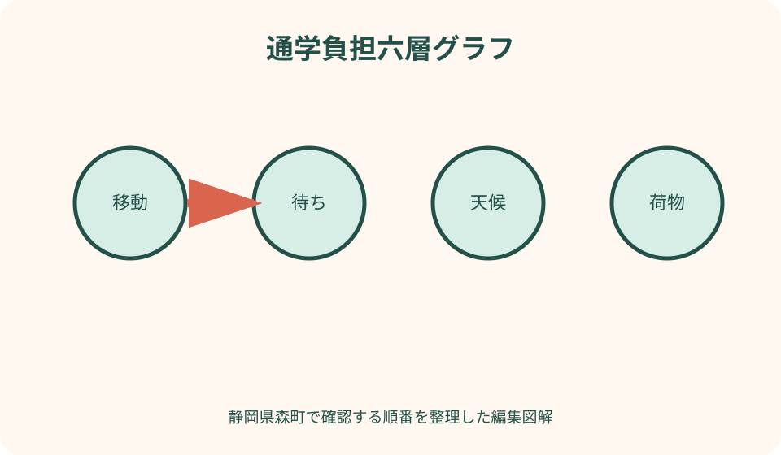
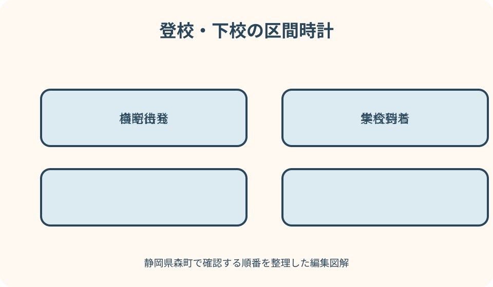

学校・就学・家庭記録｜最終確認 2026-08-10
静岡県森町の通学負担を記録｜時間・天候・荷物・体調の見える化
通学負担は、自宅から学校までの距離や地図上の徒歩分数だけでは分かりません。集合場所で待つ時間、交差点の停止、坂、雨、週初めの荷物、下校後の疲れ、保護者送迎に必要な往復が重なります。森町の学校・交通・通学路情報を入口に、子どもの一週間を時間と状態で記録し、家庭の印象を学校が再確認できる相談資料へ変える方法をまとめます。

編集イラスト結論：距離を六つの負担へ分解する
通学記録は、移動時間、待ち時間、天候、荷物、体調、家庭の送迎負担の六列にします。徒歩何分という一つの数字へまとめると、改善を相談したい条件が見えません。
登校と下校は別の行にします。朝は通勤車両と集合時刻、下校は曜日別の授業時数、日差し、友人との歩調が異なるためです。
一日だけ速く歩かせた記録ではなく、通常の一週間を測ります。入学前の試歩なら、実際に近い荷物と停止を含め、推定値であることを書きます。
負担が見えたとしても、特定経路が危険、送迎が必要、学校が支援すべきと記事が判定するものではありません。学校へ事実を伝え、正式な通学方法と相談手順を確認します。
森町の学校・交通・通学路情報を入口にする
森町公式の小中学校一覧で、在籍校の所在地と連絡先を確認します。地図上で最も近い学校を家庭が選ぶ資料ではなく、正式な就学先と窓口を照合するために使います。
町の公共交通ページには、町営バスやデマンドタクシーなどの情報があります。ただし便があることと、児童生徒の通学方法として利用できることは別なので学校へ確認します。
森町は子供の移動経路に関する交通安全プログラムを案内し、関係者による通学路の安全確保を継続しています。家庭の負担記録は公的点検の代替ではなく、学校相談の補助資料です。
学校教育課の連絡先も記録表に置きます。日々の通学相談をどこから始めるか、学校と教育委員会の役割を家庭だけで決めないようにします。
測定前に学校指定の通学方法を確認する
学校が示す通学路、登校班、集合場所、集合時刻、徒歩・自転車・送迎の扱いを確認します。家庭が便利な近道を測り、その結果を正式経路の負担として提出しません。
転居や入学前で指定が未確定なら、候補経路の試算と明記します。就学先や経路が決まった後に再測定する予定日を入れます。
きょうだいや近所の子が使う方法が同じとは限りません。学年、地区、年度で違う可能性を踏まえ、在籍校の最新資料を基準にします。
下見を行う場合は保護者が同行し、交通量や天候が危険な日を選びません。測定のために安全確認を省いたり、子どもを急がせたりしないことが前提です。
所要時間は区間別に測る
自宅から集合場所、集合待ち、集合場所から主要交差点、学校到着までに区切ります。全体時間だけでは、歩く負担と待つ負担を区別できません。
時計を開始するのは玄関を出た時、終了は学校が指定する到着地点とします。校門から教室までを含めるかは記録の目的に合わせ、定義を表の上に書きます。
横断待ち、友人との合流、信号、踏切など停止時間は別欄にします。本人の歩行速度だけを原因とみなさず、経路の条件として残します。
平均だけでなく最短、最長、通常の幅を見ます。五日間で二十五分から四十分なら、三十二分と一つに丸めず、長くなった日の条件を確認します。
待ち時間は場所・理由・姿勢を記録する
集合場所では到着時刻、出発時刻、待った場所、屋根や座れる場所の有無を書きます。待つ時間が歩く時間より長い日も、通学負担の一部です。
バスなどを利用する場合は、停留所までの移動、待ち、乗車、乗換え、降車後を分けます。時刻表上の乗車時間だけを総通学時間にしません。
待っている間に寒い、暑い、雨で濡れる、騒音が強いなど本人の反応を記録します。保護者の推測と本人の言葉を別にします。
遅延があった日は、何分遅れたか、学校へどう連絡したか、その後の体調を残します。一回の遅延から交通手段全体を評価しません。

天候は気温・雨・風・日差しに分ける
「悪天候」と一語にせず、気温、雨の強さ、風、日差し、路面状態を書きます。同じ所要時間でも身体への負担は異なります。
雨天は、傘や雨具で荷物が増え、路肩が狭く感じる区間、水がたまる地点を記録します。増水した水路へ近づき、深さを確かめる行為はしません。
夏は出発前と到着後の体調、水分、日陰の有無、冬は手足の冷えや暗さを観察します。医療上の判断が必要なら記録を持って専門家へ相談します。
警報や危険な天候の日は、記録を完成させるために通常どおり歩かせません。学校と町の情報に従い、休校・待機・送迎の扱いを確認します。
荷物は重量だけでなく持ち方を見る
ランドセルやかばん、教科書、端末、水筒、体操服、雨具を含め、出発時の総重量を同じ方法で測ります。家庭用の数値は参考であり、健康評価ではありません。
月曜や金曜、行事日、学期末など荷物が増える日を別に記録します。毎日の平均では、負担が集中する曜日を見落とします。
重さだけでなく、片手がふさがる、傘と荷物が干渉する、肩ひもがずれる、坂で姿勢が崩れるなど持ち方を観察します。
持ち物を学校へ置けるか、教材の持帰り方法を変えられるかは、家庭で独自に省略せず学校へ相談します。必要な学習物を無断で持たせない判断はしません。
体調は出発前・到着時・帰宅後の三点で見る
出発前には睡眠、食事、痛み、気分を簡単な尺度で記します。登校後の疲れを通学だけの影響と決める前に、その日の前提を残します。
学校到着時の様子は家庭から見えないため、必要なら学校へ観察可能な範囲を相談します。毎日教職員へ詳細記録を求めるのではなく、目的と期間を示します。
帰宅後は、休む時間、食欲、痛み、宿題開始、翌朝への影響を見ます。本人の「疲れた」という言葉を軽視せず、数値だけに置き換えません。
息苦しさ、意識の変化、強い痛みなど緊急性がある症状は、記録を続けるより医療・救急への相談を優先します。この記事は診断を行いません。
本人の負担感と保護者の観察を分ける
本人には、楽だった区間、つらかった区間、待つのが嫌だった場所、荷物で困ったことを聞きます。「何点だった」と一つの数字だけを求めません。
保護者欄には歩調、休憩、表情、発言などを記し、「体力がない」「怠けている」といった評価を避けます。
本人が楽しいと答えても、長い回復時間がある場合は両方を記録します。大人が感じる負担と本人の気持ちが違っても、一方を消しません。
子ども同士を比較せず、同じ本人の曜日・天候・荷物の変化を見ます。きょうだいの記録を基準に通学能力を評価しません。
送迎は乗車時間と家庭拘束を別にする
車での送迎は、子どもの乗車時間、保護者の往復、待機、乗降場所からの移動を分けます。片道十分だけで家庭負担を表しません。
学校周辺の乗降ルール、車での進入、遅刻・早退時の受付を学校へ確認します。近隣道路へ短時間なら停められるという家庭判断をしません。
送迎者が一人だけなら、勤務、体調、車両故障の代替を考えます。別の家族へ頼む場合も、学校の引渡しや登録手順を確認します。
送迎を続ける・やめる判断は、記録だけで確定せず、本人の状態、学校の通学方法、医療上の助言が必要ならそれも含めて相談します。
公共交通は乗車前後と運休時を含める
バス等を候補にする場合は、自宅から停留所、待ち、乗車、乗換え、降車後、学校までの全区間を測ります。乗車中に座れることを前提にしません。
運行日、予約の要否、利用条件、運賃、休校日の扱いは最新の公式案内を確認します。町の交通サービスが学校通学へ利用できるかは関係窓口へ尋ねます。
一本逃した場合の次便、学校への連絡、迎えへの切替を記録します。時刻表があることを、遅延や運休がない保証とはしません。
本人が一人で待つ区間、乗降時の段差、荷物の扱いも観察します。利用の適否を記事で判断せず、家族・学校・運行者へ確認します。
一週間の記録から負担が重なる日を探す
表を曜日別に並べ、時間が長い日、荷物が重い日、睡眠が短い日、雨の日へ印を付けます。単独要因ではなく重なりを見るためです。
例えば月曜の雨天だけ帰宅後に一時間休むなら、週初めの荷物、傘、集合待ちを候補として分けます。原因を一つに決めません。
負担が少なかった日も残し、その日の荷物、天候、同行者、下校時刻を比べます。うまくいく条件は学校相談の材料になります。
一週間で結論が出なければ、行事週や体調不良週を通常と区別して、もう一週間測ります。無期限の観察にせず見直し日を決めます。
学校相談用は一枚の要約にする
要約上段に、計測期間、指定通学方法、登下校別の時間幅を書きます。平均値だけでなく最長日の条件を一行で示します。
中央に、待ち、天候、荷物、体調、送迎のうち負担が重なった三項目を置きます。全記録は別紙にして、最初から読み上げません。
下段に、学校で確認したい事実、家庭が試したこと、相談したい案、次回見直し希望日を書きます。要求と質問を同じ文章にしません。
写真や位置情報を添える場合は、他の児童や住宅の個人情報へ配慮します。学校が指定する方法で共有し、公開SNSへ載せません。

学校へ相談するときは経路変更を先に決めない
「つらいので別の道にします」と通知する前に、学校指定の通学路と登校班への影響を確認します。家庭の記録は変更を相談する資料であり、許可書ではありません。
尋ねる順は、学校が把握する通学状況、指定方法、校内で相談できる担当、試せる対応、見直し時期です。すぐ決められない事項の回答日も確認します。
健康面が関わる場合は、学校だけへ医療判断を求めず、受診が必要か専門家へ相談します。学校へは診断の代わりに日常場面の観察を求めません。
交通安全上の課題は地点、時刻、方向、現象を示します。静岡県は学校関係者、道路管理者、警察等による合同点検の体制を説明しており、家庭だけで対策先を決めません。
記録する良い点
良い点は、通学距離だけでは見えない待ち、荷物、天候の重なりを説明できることです。家庭の心配を学校が再確認できる条件へ変えられます。
本人の言葉と保護者の観察を別に残すため、大人が感じた負担だけで話を進めません。本人が楽な日とつらい日を比べられます。
送迎する家庭側の拘束時間も見え、第一担当が動けない日の代替を検討できます。子どもの乗車時間だけで計画を評価しません。
対策を試した後も同じ尺度で比較でき、変化がどの条件で起きたかを見直せます。一度の面談で固定した結論を避けられます。
通学情報へ注文したい点
注文したい点は、学校所在地、公共交通、交通安全の情報が別ページにあり、家庭が通学負担を一つの工程として確認しにくいことです。
地図の距離や時刻表だけでは、集合待ち、荷物、体調、送迎の往復が見えません。入学説明で家庭向け観察表が示されると相談の入口になります。
家庭から危険や負担を伝えた後、学校、教育委員会、道路管理者など誰が確認するか分かりにくい場合があります。回答経路と見直し時期も案内してほしいところです。
一方、すべての家庭の希望を同じ方法で実現できるとは限りません。ウェブ記事は支援を約束せず、確認可能な事実を整える役割にとどめます。
代案・結論：測れない日は推定と明記する
入学前で平日の登校時間に歩けない場合は、休日の試歩を推定として記録し、交通量と集合待ちを未確認にします。入学後の再測定日を決めます。
本人が体調不良なら、記録のために歩かせず休ませます。その日は欠測として、体調と学校への連絡だけを残します。
保護者が同行できない日は、別の大人へ同じ表を渡すか、本人の聞き取りだけの記録と区別します。測定者が変わったことを書きます。
結論として、完全な平均値を作るより、どの条件で時間・疲れ・家庭負担が増えるかを学校と共有できる記録の方が実用的です。
大石の視点：物件の徒歩分数を通学時間と呼ばない
不動産広告の徒歩分数は、子どもの歩調、登校班、信号待ち、坂、荷物を含む実測ではありません。私は、契約前に候補経路を学校へ確認し、実際に歩くことを勧めます。
同じ距離でも、町なかと山間部、橋や河川沿い、歩道の有無で負担は変わります。内見時の晴れた昼だけで一年の通学を判断しません。
送迎を前提にすると、保護者の往復、勤務開始、きょうだいの園、車両故障が生活へ影響します。毎日続けられるかを一週間の時間表で見ます。
不動産会社は通学安全、交通の定時性、学校の個別支援を保証できません。一次情報と現地観察を分け、未確認事項を学校・行政へ戻します。
記事固有の通学負担六層グラフ
横軸を曜日、縦に移動、待ち、天候、荷物、体調、送迎の六層を重ねます。負担が高い層を色で示し、一つの総合点へ潰しません。
登校は上向き、下校は下向きの棒にし、同じ日の違いを見ます。朝の待ちと下校後の疲れを一つの時間へ足しません。
各層には数値だけでなく短い事実を付けます。「雨」「端末持帰り」「信号三回待ち」のように後から条件を思い出せる言葉にします。
グラフの右側へ学校確認、家庭で試すこと、見直し日を置きます。可視化で終わらず相談の次の行動へ結びます。
七日間記録カードの書き方
表面は、出発・集合・到着時刻、停止理由、天候、荷物重量、出発前体調、帰宅後回復時間を一日一行にします。
裏面は、本人の言葉、保護者の観察、学校へ尋ねること、送迎者の往復時間を記します。情報源を混ぜない配置です。
尺度は家庭内で統一し、途中で一から五を一から十へ変えません。数値の横へ意味の凡例を付けます。
七日目に最長、最短、負担が重なった日、楽だった日を選びます。良い・悪いの評価ではなく条件を比較します。
学校へ伝える短い文例
「指定通学方法で一週間測り、登校は二十八分から四十二分でした。雨の月曜は集合待ちと荷物が重なりました」と期間、幅、条件を伝えます。
「本人は坂より集合場所で立って待つ時間がつらいと話しています。学校が把握する集合方法と、確認できる選択肢を相談したいです」と本人の言葉を分けます。
健康面は「帰宅後に横になる日が三日ありました。家庭記録を医療機関にも相談します。学校到着時の様子を一定期間確認可能か伺いたいです」とします。
送迎は「保護者の往復が一時間で、勤務と重なる日があります。学校の送迎ルールと、家庭が検討できる代替を確認したいです」と事実から始めます。
まとめ：負担が重なる条件を学校へ戻す
静岡県森町で通学負担を記録するときは、正式な通学方法を確認し、登校・下校を分け、移動、待ち、天候、荷物、体調、送迎を一週間測ります。
平均時間だけでなく、最長日と楽だった日の条件を比べます。本人の言葉、家庭の観察、数値を別欄にし、診断や安全判定へ飛躍しません。
学校相談用は一枚に要約し、詳細記録を添えます。経路変更や送迎、支援を家庭で決定せず、学校のルールと関係者の確認に沿います。
今日の一歩は、明日の出発・集合・到着、待ち、天候、荷物、帰宅後の回復を一行に書くことです。七日後に負担が重なる条件を三つ選んでください。
公式情報・確認先
掲載内容は次の一次情報を基礎に整理しました。営業、料金、催し、交通は変わるため、出発前または手続き前にリンク先で最新情報を確認してください。
- 小学校・中学校（静岡県森町、2026-08-10確認）
- 公共交通（静岡県森町、2026-08-10確認）
- 子供の移動経路に関する交通安全プログラム（静岡県森町、2026-08-10確認）
- 学校教育課（静岡県森町、2026-08-10確認）
- 通学路等の交通安全対策（静岡県、2026-08-10確認）
- 通学路における合同点検結果を踏まえた交通安全の確保の徹底について（文部科学省、2026-08-10確認）